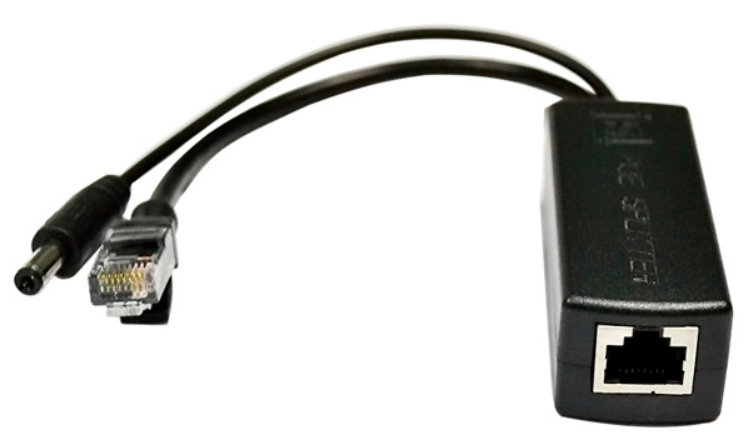
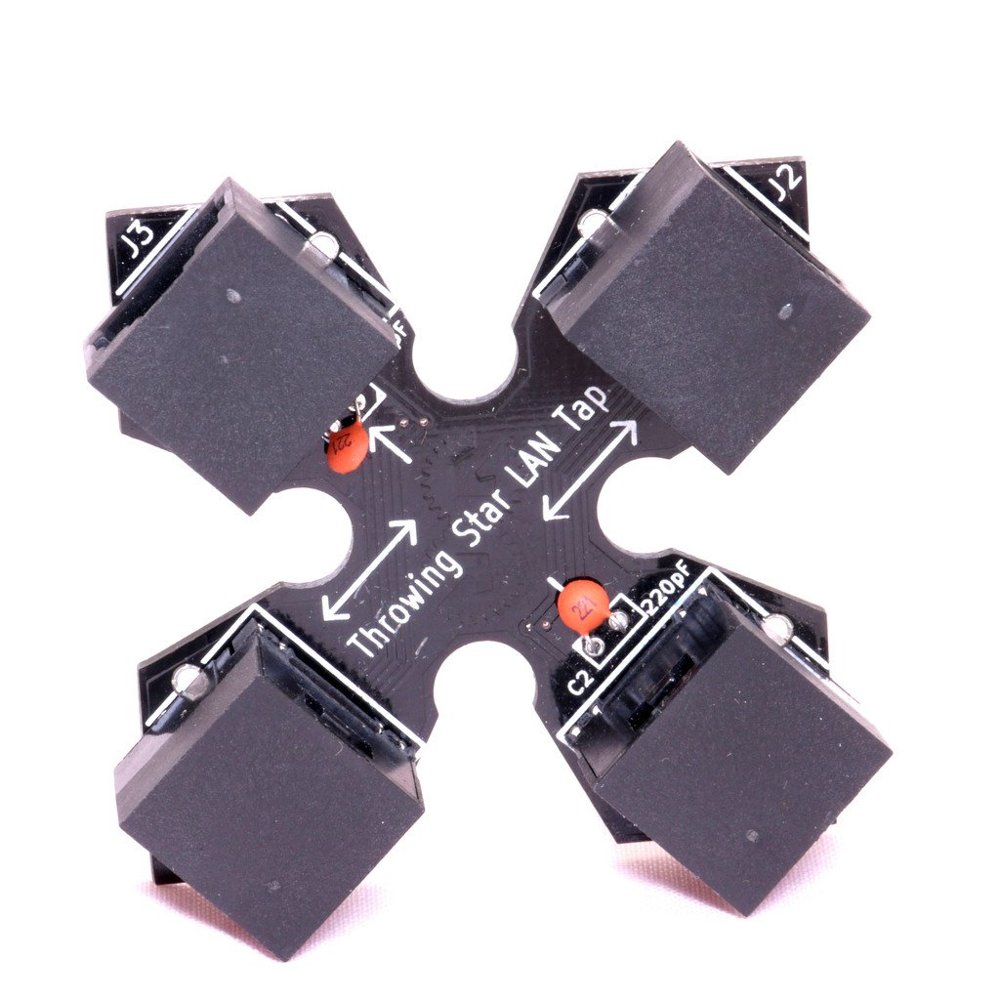
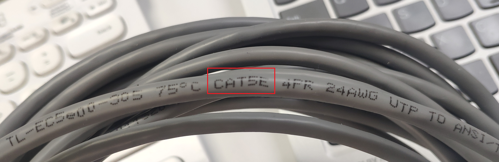
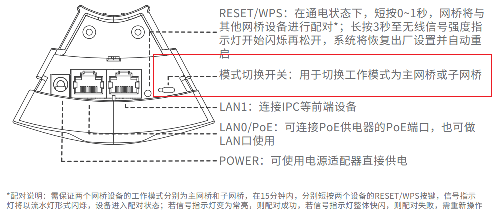
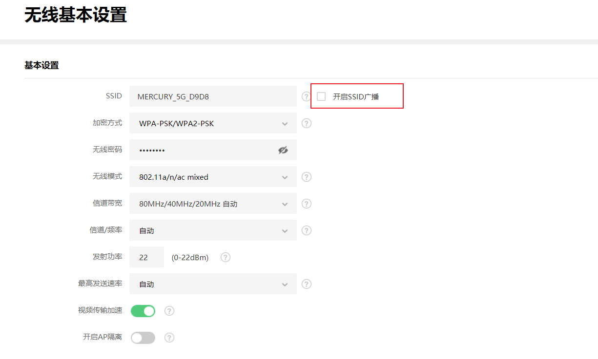
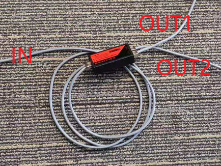
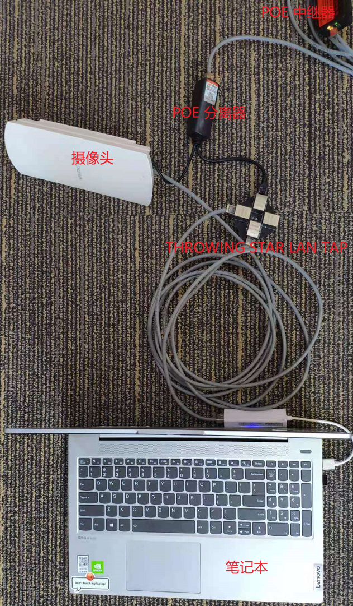
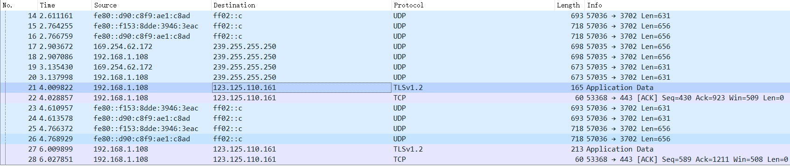
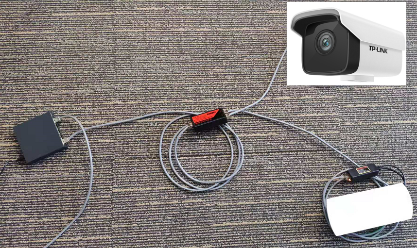
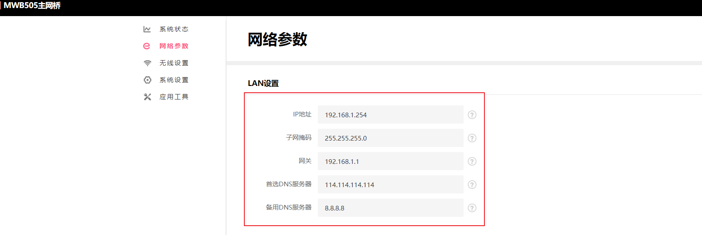

hvv 红队何必进机房
hvv 外勤人员新姿势
前两年 hvv 红队伪装成维修人员、监察部门进入机房等还比较新鲜，但随着防守方意识的不断增强，线下社工难度越来也大。本文提出一种无须进入室内接入企业内网的姿势，为广大 hvv 外勤人员拓展新思路。同时，也给广大防守方提个醒，不仅仅要关注办公电脑、机房设备，还需要关注如摄像机、打卡器等边缘设备。
部分大型企业的安防系统也是接入内部网络的，怎么实现不进入室内也能接入到企业内网。开干之前需要准备些设备。
工欲善其事，必先利其器
-
POE分离器与POE供电器是相对的。POE供电器是将数据信号和电力合在一起，所以POE供电器又称POE合路器。POE分离器的工作过程正好相反，是将数据信号和电力分离。
当笔记本需要借助 POE 网线接入网络时，可以使用 POE 分离器 分理处电源与常规网线，使用转接出来的网线即可接入网络。
此外，大多数 POE 无线网桥使用的是 Passive POE，使用标准的 POE 交换机是不能供电的。于是就可以使用这个分离器来转接。

-
将标准 POE 一分为二，使得 POE 交换机的一个端口能够接入两个设备。使用 POE 中继器的目的是，需要在维持原有的摄像机正常工作状态下，利用原有的一根 POE 网线， 多接入一个设备（无线网桥、笔记本、无线路由等）。

POE 无线网桥
利用传统监控行业的使用较多的无线网桥中继网络，让远在数千米外的电脑也能访问内部网络。正因为没有额外的外部的电源，所以需要使用 POE 供电的无线网桥。
THROWING STAR LAN TAP
在 RJ45 以太网上做中间人，嗅探上下行数据。在静态的网络中，想要知道网络中的IP段，又不想主动去探测扫描（容易被发现）。可以用 THROWING STAR LAN TAP被动监听，针对 POE 网线，硬件设备需要微调后，打板制作。

网线
低于超五类的网线不能用于 POE 供电，所以需要使用超五类（线上标识为 CAT5E）或六类网线（线上标识为 CAT6）。

网络结构
按照如下网络拓扑结构，将网桥和POE中继器等设备接入到内网中。

行动
夜黑风高夜，寻一静谧处，得一探头，绕其后背，拔掉网线，然后就是一顿猛如虎的操作。
下面来动手搭建了一个测试环境。由于没有 POE 监控环境，于是买了一个 POE 交换机，接入到了路由器上。然后将 POE 摄像头（注，手头没有摄像头采用其他设备代替，不影响本次测试）接入到 POE 交换机上。实验的基础环境就搭建好了。

然后就是实战部分，需要的设备就是上面介绍的POE分离器、 POE 中继器、POE 无线网桥以及数条网线。
短按 REST 键，将两个网桥进行配对。
将其中一个设置为主网桥，一个设置为子网桥。

初始化
进入网桥管理后台，配置无线参数，SSID、密码等。主网桥设置无线网络的目的是方便配置网络，但为了避免被发现需要关闭 SSID 广播。子网桥配置无线网络方便电脑接入网络，展开下一步行动。

拔掉摄像头与POE交换机（或NVR、NVR） 之间的网线。
使用 POE 中继器将网线一分为二。

在网线与摄像头之间插入 THROWING STAR LAN TAP 获取网段。
如果知道内部网络网段，可以跳过这一步。
笔记本接入到摄像头与上层通信的网络中，采用被动的方式获取 IP 网段。由于大型企业内部多采用静态 IP, 主动式的扫描很容易被发现，于是使用 THROWING STAR LAN TAP 进行被动监听。

使用 Wireshark 抓包获得摄像头的IP地址为 192.168.1.108，然后通过流量中的其他信息（如NVR IP地址）等猜测出网关地址，并使用笔记本接入网络中验证 。

POE 中继器的另一个网口连接到 POE 无线网桥网桥。
到这里，物理连接已经完成。

连接主网桥网线网络，配置网络。
现在可以找个不太引人注目的地儿，但还在主网桥的无线网络覆盖范围内。根据获取的信息给主网桥设置 IP 地址、网关、DNS服务器。

功成身退。
主网桥配置好了，就可以撤退了，避免挨打。
连接子网桥网线网络，配置网络。
与主网桥相似的配置方式配置子网桥，设置 IP 地址、网关、DNS服务器。
开始内网漫游。
网络配置完成，网桥之间的连接建立成功。就可以开始内网漫游了。
访问路由器，在后台看到了两个新增的匿名主机以及当前笔记本的连接信息，即表明使用 POE 无线网桥成功接入了内部网络。

结语
本文采用 POE 无线网桥是基于现有设备，底成本、高效率的一个方案。更好的方案是自己打板设计一个采用蜂窝网络通信的嵌入式Linux设备，能够在任何地点连接使用。
于防守方，网络中边缘设备需要合理的管控，防止设备被替换或接入其他恶意的终端。
以上来自从未参与某大型活动，却屡屡听闻活动中各种趣事的 IOT 安全研究员的 YY。如文章有欠妥之处，欢迎指正。
首发于：火线Zone